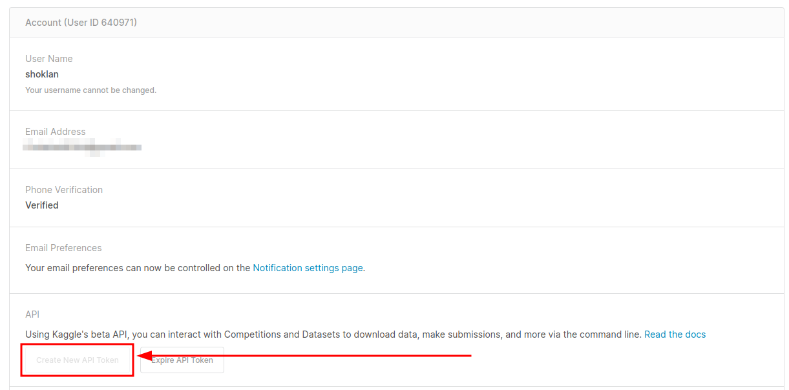

from pathlib import Path
dataPath = Path("cycle-frontier-data")
allJobRewards.to_csv(dataPath/"allJobsRewards", index=False)
loot.to_csv(dataPath/'loot', index=False)
tasks.to_csv(dataPath/'tasks', index=False)
drives.to_csv(dataPath/'drives', index=False)
guns.to_csv(dataPath/'guns', index=False)
backpacks.to_csv(dataPath/'backpacks', index=False)
ammo.to_csv(dataPath/'ammo', index=False)
mineTool.to_csv(dataPath/'minetool', index=False)Where We Left Off
In the previuos post, we dealt with missing values and finally asking some last minute questions. In this post, we’re going to follow in the footsteps of Robert Ritz’s post about getting a dataset updated automatically to avoid cluttering up Kaggle with old datasets which are not very useful being out of date.
Note that this post is about getting the data uploaded and not about doing any sort of Analysis.
A Bit of Cleaning
Setup Integration
Following along with the article, we’re going to create a Kaggle API Key. We’ll go to the account page and make a new API key for this: 
And, once we have this we add it as an Environmental Variable per the post:
Since we’re making our own data set, we’ll need to initialize the dataset on kaggle first:
!kaggle datasets init -p cycle-frontier-dataThis will not work, as it did not for me, since it expects you to make the folder first. So, we’ll do that and then init:
!mkdir cycle-frontier-data
!kaggle datasets init -p cycle-frontier-dataOnce done, you’ll want to update the dataset-metadata.json file which can be found on the side:
Import and Merge Data
So, now we need to save the data to this folder since Kaggle expects it there.
Add Dataset to Kaggle; Schedule It To Run
Once done, you run the create to upload the data:
!kaggle datasets create -p cycle-frontier-data… and the dataset will be private until you fill it out the dataset and then set it to public. Make sure that at the bottom of the Notebook you include the line to update the dataset - per the post:
!kaggle datasets version -p cycle-frontier-data -m "Automatic Update"Last, you’ll want to set the Notebook to run on a schedule; I set it to run as rarely as possible. If the data is out of data you could always simply login and force it to run.